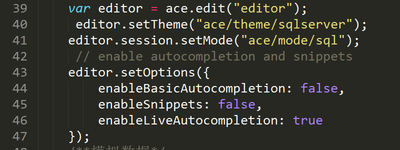
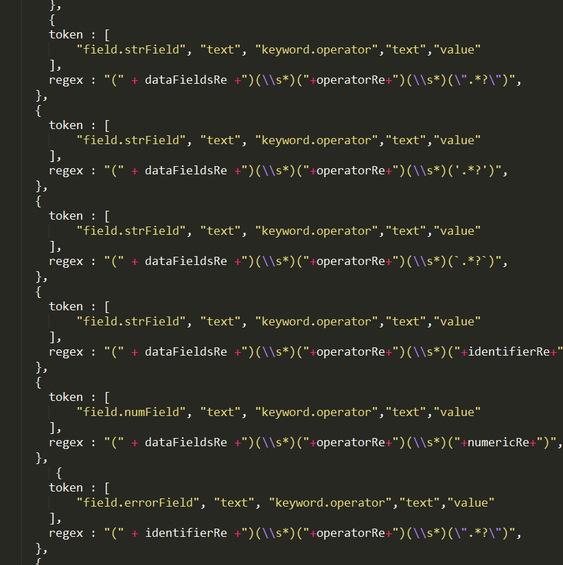
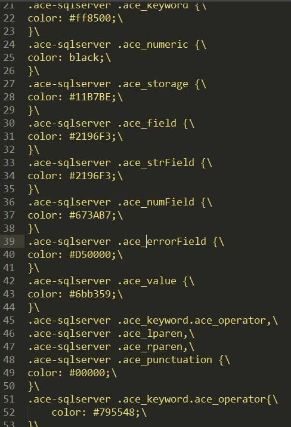
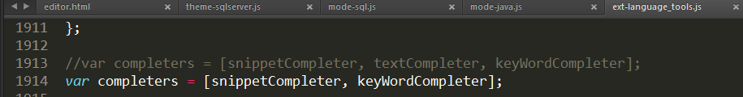
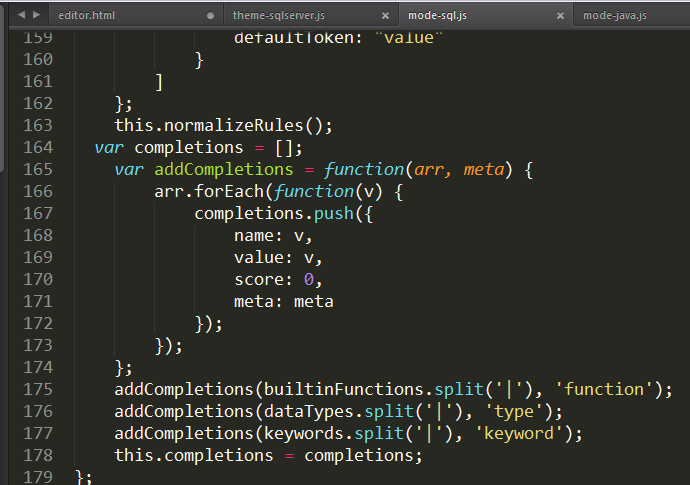
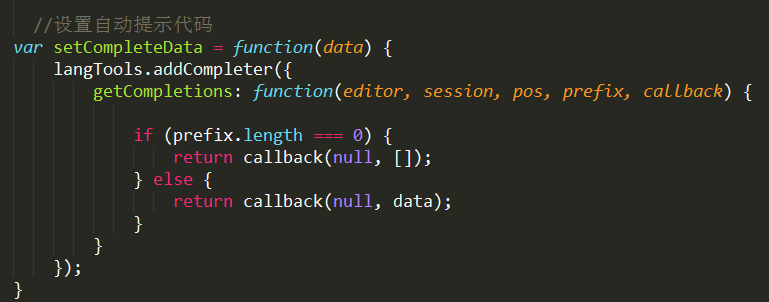

我在ace-editor的基础上实现HQL-editor功能，为了文件小我就只取我需要的文件，下面是我在ace-editor上做的改动.
- 1.我把编辑器的主体和模式设置成sql的，并使编辑器具有主动补全功能。

- 2.修改mode-sql.js使其适应HQL编辑器高亮规则。

截图只是一部分
- 3.修改theme-sqlserver.js设置高亮规则颜色样式

- 4.修改自动补全的内容，使其只有snippetCompleter、 keyWordCompleter,设置keyWordCompleter的内容为关键字或一些函数名称(我觉得这些可以提示，所以增加了这些),并添加自定义的字段名completer



- 5.因为自动补全弹框的样式需要去看设置弹框的单行高，因为时间的关系我都没有去改，但应该也能改的。因为我觉得一些关键字和函数名称也需要提示，所以我都把它加上了，不仅仅提示字段名。因为时间的关系我也没有对这个编辑器外观进行调试，最外层固定宽高和去掉左边的行数。
整体的功能就是这样了，好像都实现了，但具体的数据或者还需要其他效果不知道可不可以，但是我模拟的数据和输入的一些测试字段的值是行的。